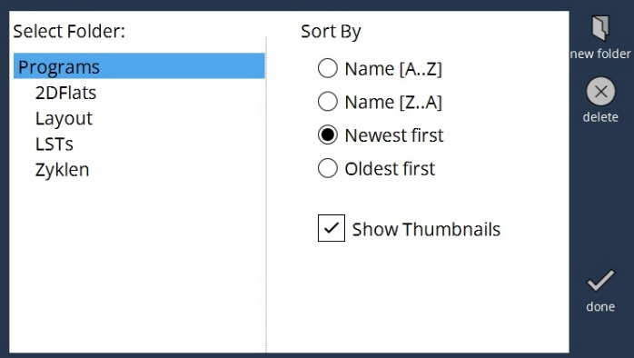

Gestion de fichiers
Importer
Pour importer des fichiers, vous pouvez directement utiliser le bouton Importer en haut à droite de l’écran. Il vous permet d’importer avec un minimum de clics.

Gestionnaire de fichiers
Toutes les autres opérations de fichiers sont effectuées à l’aide de l’option Gestionnaire de fichiers (disponible sur le côté droit de l’écran).
Les fonctions suivantes sont disponibles dans les opérations de fichier :
-
Renommer : Cette commande vous permet de modifier le nom du programme sélectionné. Vous pouvez saisir le nouveau nom dans la fenêtre de dialogue qui apparaît.
-
Supprimer : Ce commutateur permet de supprimer le programme sélectionné.
-
Cloner : Cette commande vous permet de faire une copie exacte du ou des programmes que vous avez sélectionnés. Sélectionnez un ou plusieurs programmes et appuyez sur ce bouton pour créer une copie du ou des programmes sélectionnés. Lorsque plus d’un programme est cloné, une fenêtre de dialogue Cloner les fichiers apparaît et vous demande si vous souhaitez cloner le nombre de fichiers sélectionné. Une fois que vous appuyez sur la marque OK, les fichiers sont clonés. En général, le nom du fichier cloné comporte un numéro après le nom de la pièce, séparé par un tilde (par exemple, si vous clonez une pièce nommée P5, le nom de la pièce clonée sera P5~1).
-
Exporter : Lorsque vous appuyez sur cette commande, la boîte de dialogue Exporter Fichier s’ouvre et vous permet de choisir l’emplacement où exporter le(s) fichier(s) sélectionné(s).
-
Importer : Vous pouvez importer un ou plusieurs programmes à l’aide de cette fonctionnalité. Ce bouton ouvre la boîte de dialogue Importer Fichiers dans laquelle un ou plusieurs fichiers Programme ou Programme Direct peuvent être sélectionnés pour l’importation. Une fois les fichiers sélectionnés, appuyez sur la marque OK dans la fenêtre de dialogue pour importer le(s) fichier(s). Si le nom du ou des fichiers que vous essayez d’importer existe déjà, un message d’avertissement s’affiche, comme le montre l’image ci-dessous, demandant s’il faut remplacer le(s) fichier(s) existant(s). //Cette option est présente à l’extérieur du menu du gestionnaire de fichiers.

-
Organiser : La sélection de l’identification du programme, en haut de l’écran, ouvre cette option. Une fenêtre de dialogue telle que celle illustrée dans l’image ci-dessous s’affiche lorsque vous appuyez sur ce bouton.

La page Edition affiche tous les programmes du dossier Programmes. Vous pouvez créer des dossiers et structurer vos données dans ces dossiers. Vous pouvez créer de nouveaux dossiers à l’aide de la commande nouveau dossier. Cela créera un nouveau dossier dans le dossier Programmes. Sur la gauche, vous pouvez voir la section Sélectionner un dossier qui affiche la structure du répertoire. Vous pouvez choisir un dossier dans l’arborescence et afficher le contenu du dossier sélectionné dans la page d’édition.
Vous pouvez également trier les fichiers dans le dossier en utilisant les options fournies sous la section Trier par.
Pour trier par nom dans l’ordre croissant, choisissez Nom [A..Z] et pour trier par nom dans l’ordre décroissant, choisissez Nom [Z..A].
Récents affiche tous les programmes créés récemment et Anciens affiche les programmes triés dans l’ordre croissant de leur date de création.
L’option Afficher les vignettes permet d’activer ou de désactiver l’affichage des vignettes pour les programmes dans la page Edition. Le bouton supprimer permet de supprimer un sous-répertoire.
| Seul un sous-répertoire vide peut être supprimé. |
Appuyez sur terminé pour appliquer les modifications et quitter.